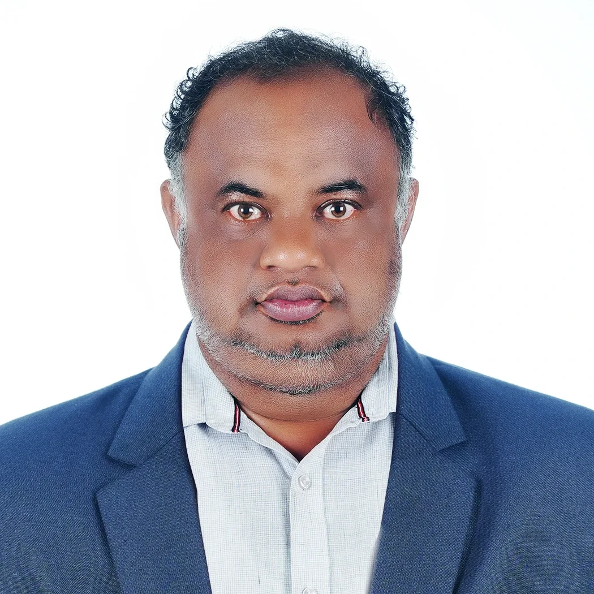

Knowledge • Skill • Success
Knowledge • Skill • Success
The Department of Electronics and Communication Engineering (ECE) was established in 1985. The department has an annual intake of 60 students. It has been offering quality technical education in the field of Electronics and Communication Engineering for many years. It emphasizes practical, component-level lab work and industry-oriented training, with placement support into telecom, automation, consumer electronics, and government sectors.
Our curriculum is designed to impart both strong foundational theories and intensive practical skills in the laboratories. Students gain comprehensive hands-on operational experience with industry-standard machinery, instruments, and software systems.

HOD
"Electronics and Communication is at the core of every smart device, communication network, and automation system that shapes our world today. Our department focuses on building strong technical fundamental while giving students ample hands-on experience through modern labs, industrial visits, mini-projects, and competitions like hackathons. With dedicated faculty support, industry interaction, and a culture of innovation, we prepare our students for successful careers and higher studies. I welcome you to be part of our journey in creating the next generation of electronics professionals."